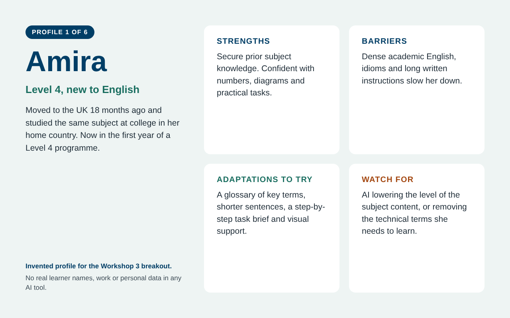
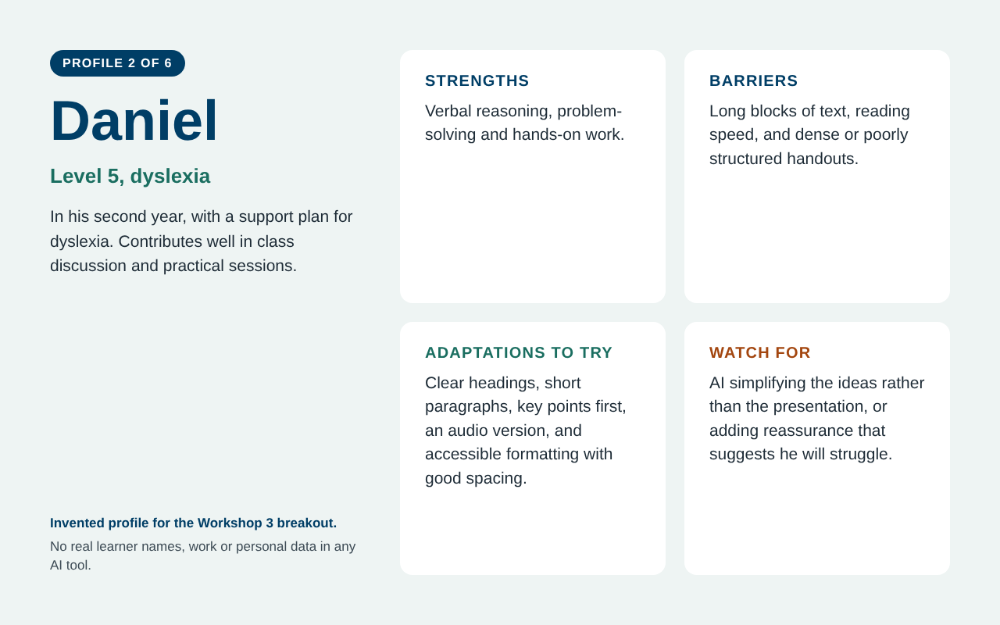
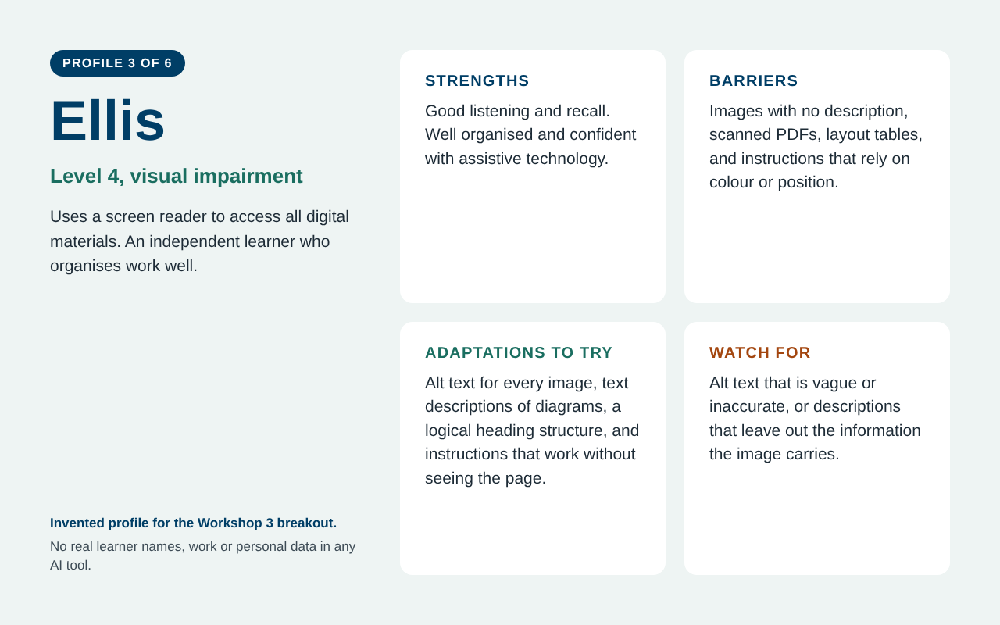
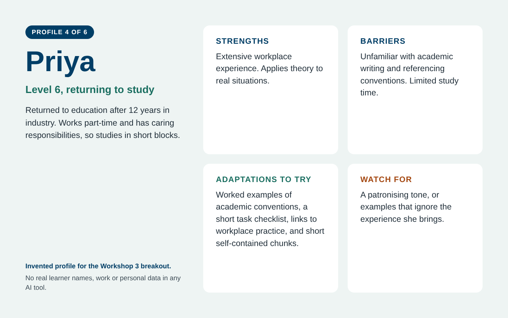
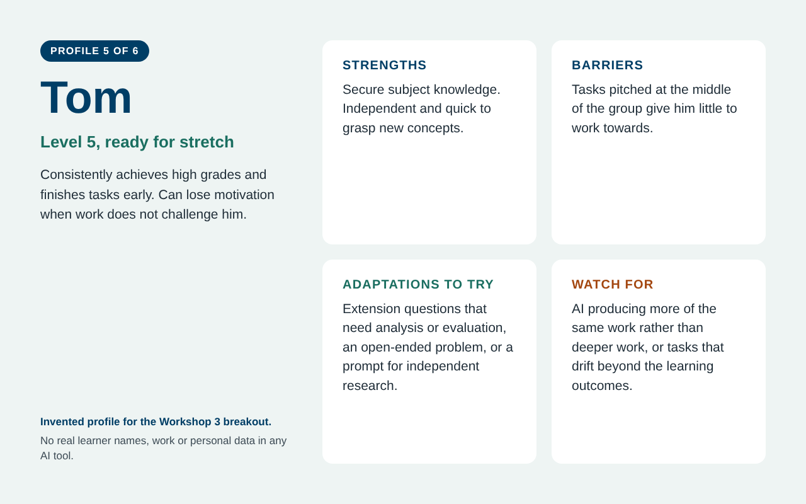
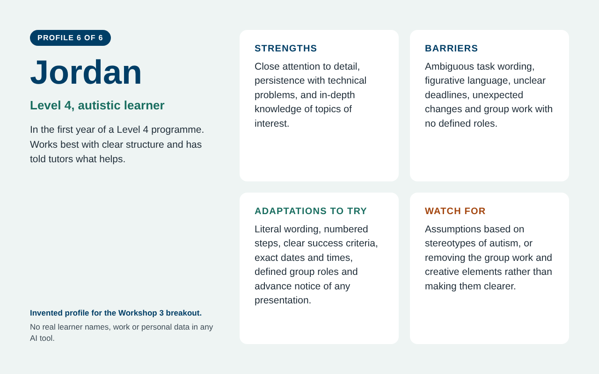

Session handouts
Start here for the overview and running order.
- PDFHandout 0, Delegate Information PackEverything you need to know about the session
- PDFHandout 1, Session 1 Welcome and AgendaA one page summary and the running order
Presentations
View opens the slides in your browser. PowerPoint downloads the original file.
- 13:15Welcome and module overviewLee Holroyd and Marc Potter
- 14:00The assessment and the AI for Educators SummitLee Holroyd
- 14:15AI foundations and the initial AI skills assessmentMarc Potter
- 14:30Workshop 1, planning and content creationChristopher Green
- 15:30Workshop 2, assessment and feedbackKyle Cameron
- 16:15Workshop 3, inclusion and personalisationMichael Thornhill
- 16:45AI literacy, key takeaways and closeMarc Potter and Lee Holroyd
Workshop 3 breakout resources
For the inclusion and personalisation breakout with Michael Thornhill.
- WordBreakout resources to adaptOne resource for each learner profile
- WordInvented learner profilesThe six profiles for the breakout
- PNGBreak even chartImage used in one of the breakout resources
Learner profile cards

1. Amira
2. Daniel
3. Ellis
4. Priya
5. Tom
6. JordanAll profiles are invented. Do not enter real learner names, learner work or personal data into any AI tool.
Assessment and skills
The module assessment, and the paper version of today’s skills assessment.
- PDFAIE401 Assessment 1 of 1The assessment brief, action research poster and Summit presentation
- PDFHandout 2, Initial AI Skills AssessmentThe paper version, if you prefer not to complete it online
Prefer to complete the skills assessment online? Go to tinyurl.com/AIE401skills.